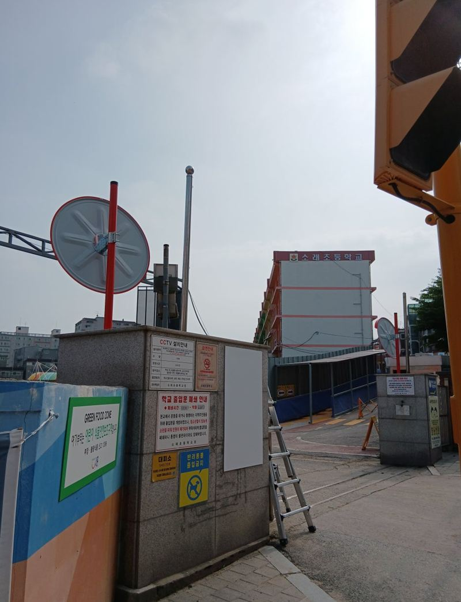
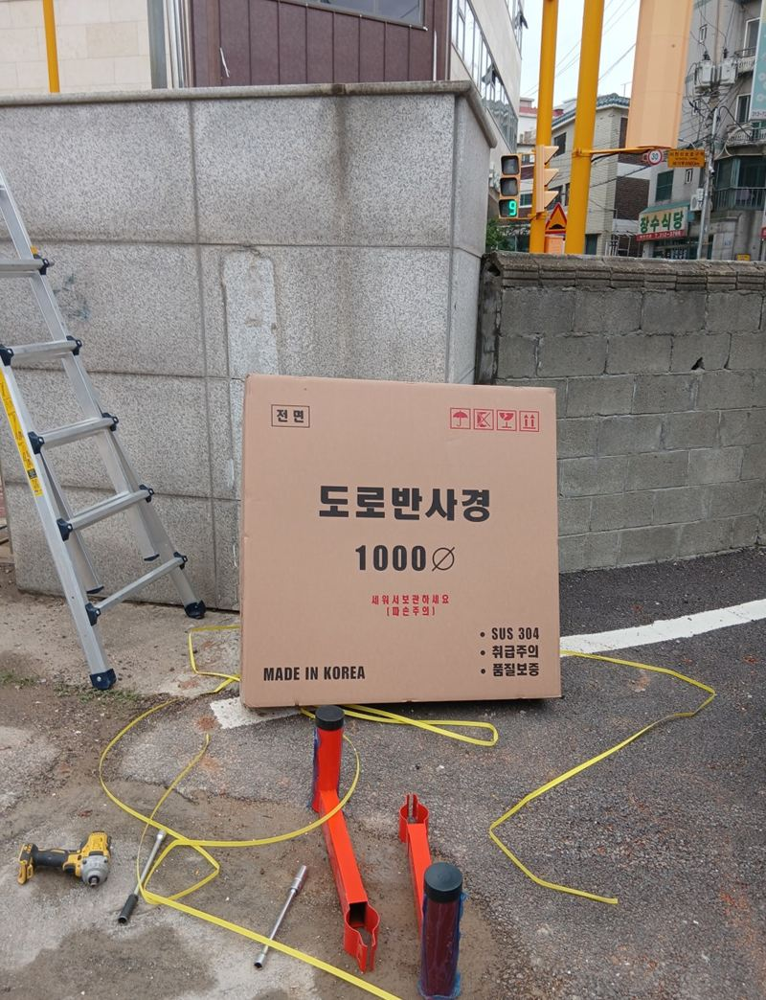
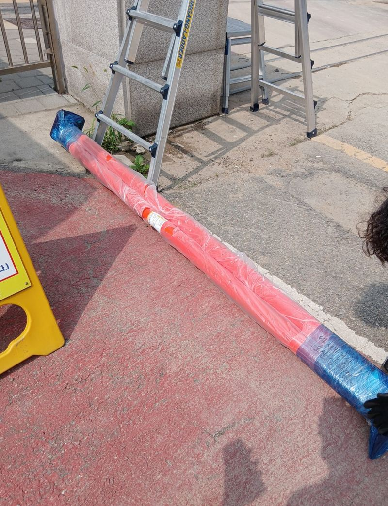
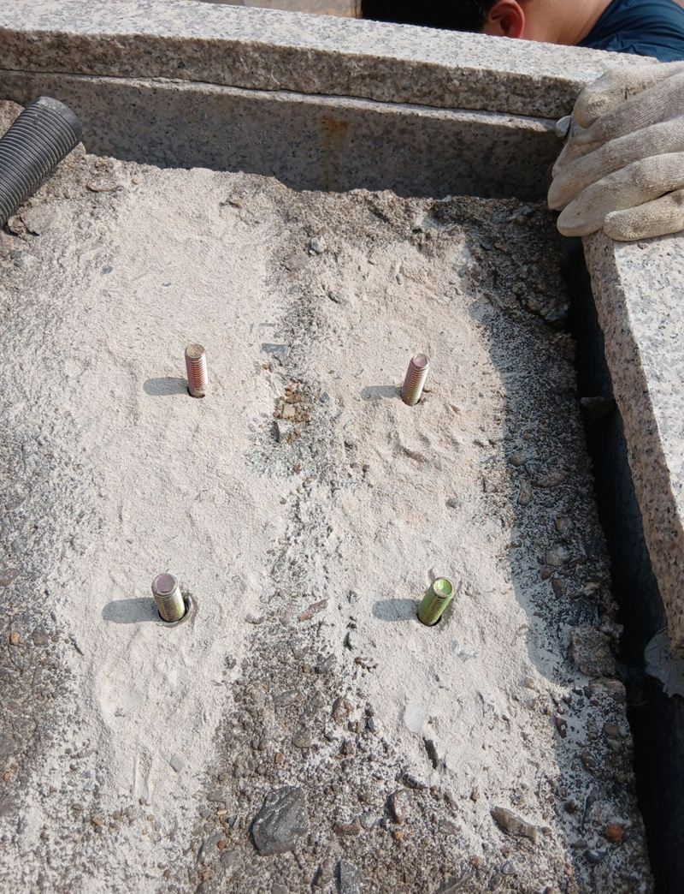
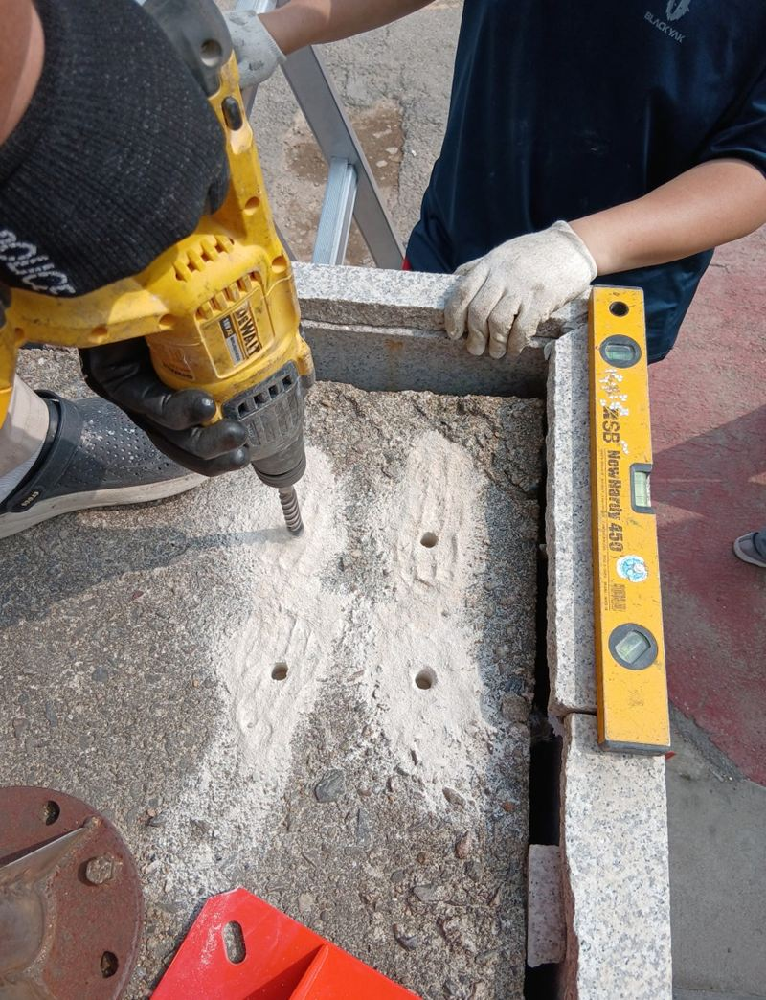

시흥 초등학교 앞 공사 구간 반사경 설치 과정
← 밀어서 전후 비교 →
"트럭이 계속 오가는데 아이들이 갑자기 튀어나오면 못 볼 수도 있어요. 트럭 운전석 높이에서도 잘 보이게 해 주세요." 시흥의 한 초등학교가 몇 년에 걸친 리모델링 공사에 들어가면서, 건설사 현장 소장님이 연락하셨어요. 통학 시간에 공사 트럭과 학생들이 같은 길을 쓰고 있었고, 좁은 골목과 가설 구조물 때문에 서로가 잘 안 보였어요. 보도블럭에 앙카로 기초를 잡아 기둥을 세우고, 트럭 운전석 눈높이에 맞춰 반사경 높이와 좌우 각도를 조정했어요.
| 현장 | 시흥 초등학교 부근, 리모델링 공사 차량 통행로 |
|---|---|
| 의뢰 | 건설사 현장 측, 트럭과 학생 사이 사각지대 줄이기 |
| 한 일 | 위치 확인 → 대형 차량용 반사경 준비 → 보도블럭 앙카 기초 → 기둥 수직 고정 → 높이 맞춤 → 좌우 각도 조정 → 트럭에 올라 시야 확인 |
| 제품 | 곡률이 높고 잘 깨지지 않는 기둥형 반사경 |
학교 앞 반사경, 기준은 누구의 눈높이인가
보통 반사경은 승용차 운전석 높이에 맞춰요. 그런데 이 길을 지나는 건 덩치 큰 공사 트럭이었어요. 트럭은 앞뒤 사각지대가 넓고 운전석이 높아서, 바로 앞을 지나는 키 작은 아이가 잘 안 보여요. 그래서 높이와 거울 크기를 트럭 기준으로 정했어요.
위치는 아이들이 골목에서 큰길로 나오는 모퉁이로 잡았어요. 공사 가림막과 구조물이 시야를 막는 자리라, 반사경이 없으면 트럭 운전자가 아이를 볼 방법이 없었어요.


보도블럭 위 기둥 고정
기둥과 거울 준비
대형 차량용으로 곡률이 높고 충격에 강한 강화 플라스틱 거울을 골랐어요. 흔들려도 상이 덜 일그러지는 제품이에요.

앙카 기초
보도블럭 아래를 단단히 잡을 수 있게 앙카를 박아 기초를 만들었어요.


수직으로 세우기
앙카에 맞춰 기둥을 세우고 수평계로 보며 곧게 고정했어요.

각도는 실제 동선에서 맞춰요
반사경은 좋은 제품이라도 각도가 틀리면 사각지대가 그대로 남아요. 기둥 위에 거울을 단 뒤, 트럭이 실제로 다니는 길을 따라 좌우 각도를 조금씩 바꿨어요. 정지해 있을 때와 움직일 때 모두 아이들이 나오는 골목이 거울에 들어오도록 맞췄어요.
마지막엔 건설사 담당자와 함께 트럭 운전석에 올라 직접 거울을 확인했어요. 소장님은 "아이들 눈높이까지 신경 써 줘서 고맙다, 다음 설치도 부탁하겠다"고 하셨어요.
이런 곳엔 반사경이 꼭 필요해요
- 학교·어린이집 앞아이들은 키가 작아 차에서 잘 안 보여요.
- 공사 현장 출입구트럭과 중장비가 드나드는 자리예요.
- 물류센터·창고 통로지게차와 사람이 엇갈려요.
- 골목 교차로건물 모서리가 시야를 막아요.
공사가 끝난 뒤에는
공사 기간에 세운 반사경은 공사가 끝나면 그대로 둘지 뗄지 정하면 돼요. 통학로가 여전히 좁고 차가 다닌다면 남겨 두는 게 아이들에게 도움이 돼요. 뗄 때는 앙카 자리를 정리해 보도블럭에 걸리는 곳이 없게 마무리해요.
바람이나 차량 진동으로 거울 각도가 조금씩 틀어질 수 있어요. 공사 차량 동선이 바뀌면 각도도 다시 맞춰야 해서, 현장 상황이 바뀔 때 연락 주시면 조정해 드려요.
학교 앞 반사경 질문
공사 기간에만 잠깐 세울 수 있나요?
앙카 고정 방식이라 공사가 끝나면 떼어 내고 자리를 정리할 수 있어요.
거울 크기는 얼마가 좋아요?
대형 차량이 다니면 큰 거울이 잘 보여요. 이 현장은 1000 크기를 썼어요.
학교 허락이 필요한가요?
학교 부지나 공공 보도는 관리 주체 확인이 필요해요. 의뢰하시는 쪽에서 먼저 확인해 주세요.
밤에도 잘 보이나요?
테두리 반사띠가 전조등 빛을 받아 위치를 알려 줘요.
보도블럭이 아니라 흙바닥이에요.
흙바닥은 깊게 파서 몰탈로 묻는 매립 방식으로 세워요.
트럭이 반사경을 칠까 걱정돼요.
차가 지나는 선에서 조금 떨어진 곳에 세우고, 높이를 맞춰 부딪힐 일을 줄여요.
다른 반사경·출차등 현장
세울 모퉁이와 차가 들어오는 방향을 찍어 보내 주세요.
전화 상담 010-4517-9872